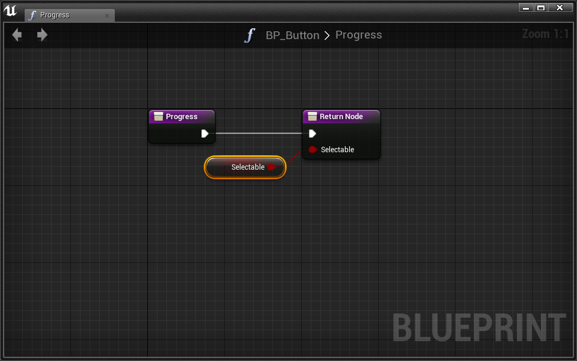

Lesson 6.2 - Gaze Based Selection
VR Selection
Download the Starter Project
Layout uses one Master Starter Project. If you’ve downloaded it recently, chances are you don’t need to re-download it.
This tutorial requires that you’ve downloaded the starter project as of 4/14/16:
- Click here to download the Layout Master starter project.
- Extract the zip folder.
- Open up the Layout_ToyBoxx.uproject and begin your adventure!
It’s common in VR to be able to interact with the world simply by looking at it. This is called gaze based interaction. From menus to game mechanics, gaze based interaction is a powerful VR tool.
In this quick tutorial, we’re going to cover an implementation of gaze based selection. Here’s what a selection will look like:
We’ll be creating the interface that allows us to:
- “Hover” on and off an actor
- Show progress as we select it by continually staring
- Actually select it
This lesson assumes you’ve gone through the Materials lesson and are comfortable with updating materials dynamically.
Review
Before we jump right into it, let’s review what we’re starting with.
- Open the Lessons > Gaze folder
- Open the Selection level
- Open BP_GazePlayer
BP_GazePlayer is the character pawn we’re going to be adding our selection logic to. It’s already set up with a reticle and a Dynamic Material Instance variable for the reticle called ReticleDMI!
We should point out a few things that are different about this setup:
Spring Arm Reticle
You may notice that the reticle is not implemented with a trace. Instead, it uses a Spring Arm component.
We used the Spring Arm component in Lesson 4 to add a smooth lerp effect to the 2.5D camera. We use the Spring Arm here for the same reason.
- Press Play in editor to test out the smooth lerping reticle
The Spring Arm also works exactly as your trace reticle works: the reticle is attached to the end and extends as far as it can until it hits something. This is in fact the core purpose the SpringArm. Here are all the details we’ve modified (marked by the yellow arrows):
Hover over any of the details in the editor to get a description of what they do.
Finally, in the Event Graph we call a function called Update Spring Arm on Tick. Open the function and you’ll see that it ensures the SpringArm is rooted at the exact position of the player’s head.

This solves a problem where the HMD and spring arm are not in sync due to translational movement, causing the reticle to be a bit off center.
Progress Reticle
Attached to our SpringArm is a reticle made with a MaterialBillboard. This reticle uses the M_ProgressReticle material which is set up to show progress with a radial selection bar. It utilizes a Progress scalar variable that goes from 0 to 1. Since we need to dynamically update this material, the BP_GazePlayer has a ReticleDMI variable that is set in the ConstructionScript.

Notice the new Create Dynamic Billboard Material which is a Layout utility node meant to take a MaterialBillboard and return a dynamic version of its material.
That’s it!
Many people prefer the smooth lerp of this reticle. Consider using this setup moving forward. Of course, you can change the amount of lag by updating the SpringArm’s Camera Rotation Lag Speed setting.
Hover On/Off
It’s time to set up the foundation of our selection interaction. We’ll do this with the goal of creating our hover on/off script. By the end of this section, we’ll have something that looks like:
This type of interaction, one that we expect to happen all over the place, is perfect for a Blueprint Interface (BPI).
- Create a Blueprint Interface called BPI_GazeInteraction
- Open the new BPI
Let’s start by adding messages for Hover On and Hover Off. We’ll use these to try and communicate with actors in the world from our BP_GazePlayer.
- Add two functions: Hover On and Hover Off

Before we jump into the BP_GazePlayer interaction, let’s set up a button that implements our new Hover On and Hover Off events.
- Open the BP_Button blueprint
Currently, the BP_Button is a static mesh and a Dynamic Material Instance variable named DMI. Let’s add our BPI and its hover events:
- Click Class Settings in the toolbar
- Add our BPI_GazeInteraction interface in the details panel
- Compile
Now we can add the interface events in the Event Graph:
- Open the button’s Event Graph
- Right click and place a Event Hover On and Event Hover Off
- Make each event print a unique string using Print String
Great! Now we can start scripting our player to fire these events when appropriate:
- Open BP_GazePlayer
In order to communicate with actors in front of our player on gaze, we need to send out a trace every Tick.
Challenge:
Back to basics: set up a Line Trace By Channel that traces from the player’s eyes to 10000cm out in front the of the player every frame.

Great! To send the Hover On and Hover Off messages, we need to know when we’ve hovered over a new actor. To do that, we have to store the actor we traced last tick, then check if it is the same actor we just traced.
- Create a new Actor variable named LastTraceActor
- Place a Sequence node
- Line Trace By ChannelSequence
- Place a Branch node
- Sequence > Then 0Branch
- Pull a wire out of Line Trace By Channel > Out Hit and place a Break Hit Result node
- Pull a wire out of Break Hit Result > Hit Actor and place a == node
- Connect our new Last Trace Actor variable to the other == input.
- Connect the == output to the Branch > Condition
- Pull a wire out of Break Hit Result > Hit Actor and place a Set Last Trace Actor node
- Sequence > Then 1Set Last Trace Actor

We just set up a Branch that tells us whether or not we are tracing the same actor as we did the previous frame. The Sequence is used to set our Last Trace Actor variable at the very end of the tick. All of this will help us hover on and off other actors.
In this case, we’re not using the LineTraceByChannel > Return Value with a Branch because it is unnecessary. If our trace doesn’t hit anything, the hit’s Hit Actor will return NULL.
Make sure you understand what’s going on with our Last Trace Actor variable and the Branch. Take your time to trace the execution path if it’s confusing you.
Challenge:
Send the Hover On and Hover Off messages to Hit Actor and Last Trace Actor at the correct time.
Hint: Find the execution path that defines when we have hovered over a new actor. At that point, send the on/off messages to the proper actors.

Awesome! Go ahead and test it out. When you look at the button in the world, your strings should print “hover on” and “hover off” appropriately.
Rather than print strings, let’s use our DMI to change the color of our button.
Challenge:
Use the DMI variable to change the color of the button when it is hovered on and off. You’ll want to change the “color” parameter of the material which can be done with a Set Vector Parameter Value node.
To get access to the Set Vector Parameter Value node, you must first drag in a reference to the DMI variable, then pull a wire out of it to access its context sensitive menu.

Tada!
Progress
Let’s get our reticle to show the progress of our selection! To do that, we’ll need a new variable:
- Create a new Float variable named HoverProgress
Challenge:
Add 0.01 to the HoverProgress variable if we’re hovering over the same actor as last tick. If we’re not, set HoverProgress back to 0.
To test that this is working, use a Print String node at the end of the tick to print the value of HoverProgress
When you test it, you’ll see numbers increasing from 0 printed to the screen. Whenever you hover over a new object, the count will restart from 0:

Great! Rather than print the numbers, let’s use our M_ProgressReticle’s scalar “progress” variable.
Challenge:
Use the ReticleDMI variable to update the “progress” value of the reticle. You’ll want to change the “progress” parameter of the material which can be done with a Set Scalar Parameter Value node.
To get access to the Set Scalar Parameter Value node, you must first drag in a reference to the ReticleDMI variable, then pull a wire out of it to access its context sensitive menu.
Update the progress in the same place you called Print String
The reticle should look like this when you’re done:

Very nice!
Let’s address the issue of our reticle trying to select everything in the world. It only makes sense for our reticle to show progress when it is hovering something that is actually selectable. Let’s implement a BPI message that returns a boolean value to inform the player if they’re hovering a selectable actor:
- Open BPI_GazeInteraction
- Add a function called Progress
- Give it an output boolean named Selectable
- Compile the BPI
Now we have to go implement our function in BP_Button
- Open BP_Button
- You’ll now see a new Progress function in the Interfaces section of the MyBlueprint panel. This function appears here rather than as an event in the Event Graph because it has an output.
You won’t see the new function unless you Compiled your BPI_GazeInteraction.
- Open the Progress interface function up
- Check the Selectable box on the Return Node
Now our BP_Button class has implemented the Progress message/function. With this done, we can go back to our player and send that message to ensure we’re hovering over a selectable button.
- Open BP_GazePlayer
Challenge:
Use the new Progress message and a Branch to check if you should add 0.01 to HoverProgress
If the hovered actor is not Selectable, set HoverProgress back to 0
When finished, your reticle should only show progress when hovering over a BP_Button

Selection
Excellent! Now all we have to do is select our button when HoverProgress reaches 1. This calls for another BPI message.
- Open BPI_GazeInteraction
- Add a Select function
- Compile
Let’s go ahead and implement this message in BP_Button
- Open BP_Button
- Add the Event Select event to the event graph
- Event SelectPrint String

Great! Let’s fire this event from BP_GazePlayer
Challenge:
When HoverProgress reaches 1, send the Select message to the button.
Selection will look like this on completion:
Okay, so you’ve noticed how once HoverProgress reaches 1, we fire Select over and over again. Let’s fix this on the BP_Button side by making it unselectable for a short amount of time.
- Open BP_Button
First, let’s add a boolean variable Selectable that we can switch from true to false.
- Add a new boolean variable named Selectable
- Set it’s default value to True!
Now we have to return this variable in our Progress function rather than always return true.
- Open the Progress function
- SelectableReturnNode > Selectable

- On Event Select, set Selectable to false.
Try it out! Now you can only select each button once.
Great stuff! To finalize the button, let’s add an animation of it moving up and down, then reset Selectable back to true so we can continue to press it.
Challenge:
Use a Timeline to animate the button up and down once Select is called. Once the animation is over, set Selectable back to true so we can continue to press the button.
Your finished product should look like:
WoooOOOOoOooOOOOoOO!!!!
Conclusion
After a bit of set up, you now have a very extendable and reusable gaze based interaction interface. With the same (or slightly altered) BP_GazePlayer you can easily create all types of variants of the BP_Button to make your own unique form of gaze based selection.
If you want to continue using the M_ProgressReticle, make sure to make a Material Instance out of it to see all the ways you can customize it.
Check out the Lessons > GazeSelection > Examples folder for more ideas on how to extend this form of interaction and selection.
Project 6 - Putting It All Together
In this assignment, you will create a new experience that incorporates gaze selection, sequencer, and custom materials. Your experience should be developed in response to one of the following themes:
- Seeing is believing
- Above and beyond
- What in the world
Your submisison must meaningfully include all of the following features:
- Extended or custom material
- Gaze selection and player control of level elements
- Player and/or object sequences
Consider how your experience will be both passive and interactive. Any materials you create should meaningfully improve the experience.
Some fun ideas:
- Make a music video
- Tell a story through simple actor animation
- Move the player through an ever changing environment